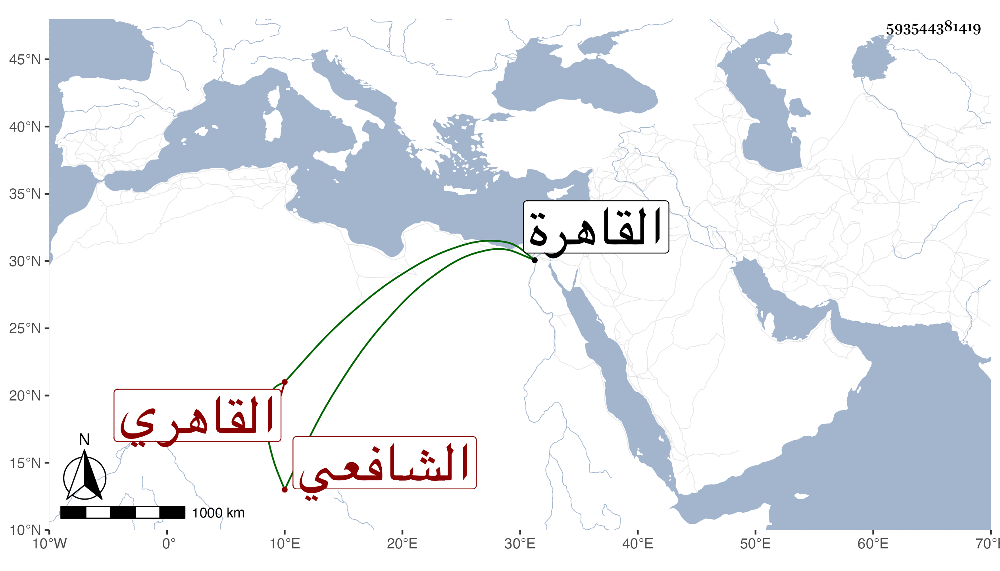

0902Sakhawi.DawLamic.ITO20230111-ara1.EIS1600.593544381419
Biography ID: 593544381419
713
عبد القادر بن عبد الرحمن بن عبد الغني بن شاكر بن ماجد بن عبد الوهاب بن يعقوب الزين بن المجد القاهري الشافعي أكبر اخوته ويعرف كسلفه بابن الجيعان . ولد في سنة إحدى وثلاثين وثمانمائة بالقاهرة ونشأ بها في حجز السعادة فحفظ القرآن والتنبيه وغيره ، وسمع على شيخنا وغيره وأخذ عن المحيوي الدماطي وجماعة ، وحج غير مرة واستقر في نظر الخزانة بعد عمه سعد الدين إبراهيم ولكن لم يمكنه عمه شاكر من الاستقلال بمباشرتها لكونه لم يحمد مشيه ثم استقل بها وكذا باشر في البيبرسية وغيرها ، وكان ذكيا شهما حسن العشرة مع من يلائمه . مات في ربيع الآخر سنة ثمان وسبعين وصلى عليه في مشهد حافل جدا ثم دفن بتربتهم تجاه الاشرفية برسباي عفا الله عنه .
